구분 | 명칭 | 설명 |
| 메뉴 바 | 협업관리시스템(Task) 기능 버튼 |
| 뷰 탭 | Timeline, Resource, Histogram 뷰 |
| 간트차트 뷰 영역 | 뷰 탭에서 선택한 뷰를 보여주는 영역 |
| 뷰 영역 범위 조정 | 연, 월, 주, 일 단위로 뷰 영역에서 보이는 범위 조정 |
SILKROAD 협업관리시스템 (Task Management) 은 WBS 기반의 Gantt 차트, 다앙한 뷰 모드 (Timeline, Resource, Histogram)를 지원하며, 프로젝트 진행 시 수행할 업무를 계획하고 이에 필요한 인력과 투입 시기를 조정하여 프로젝트 일정을 관리한다. 타 Task Management 툴인 MS-Project 와 연동이 가능하다. 프로젝트 일정을 관리하기 위해 아래와 같은 주요 기능을 제공한다.
① 일정 생성 (Task / Milestone)
② 인력 설정
③ 업무 시간 조정 (Calendar)
④ 업무 진척 산출물 (Progress Status Report)
⑤ MS-Project, MS-Excel Export / Import
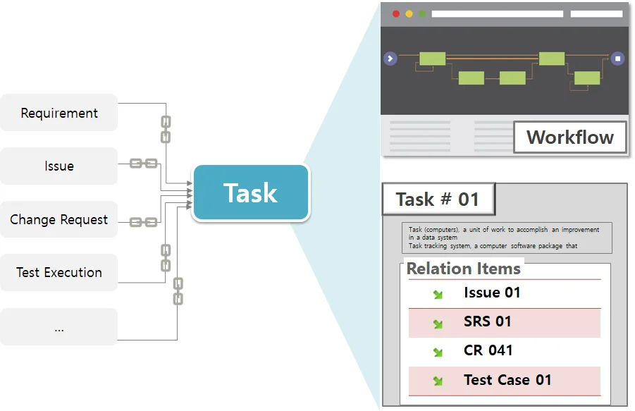 |
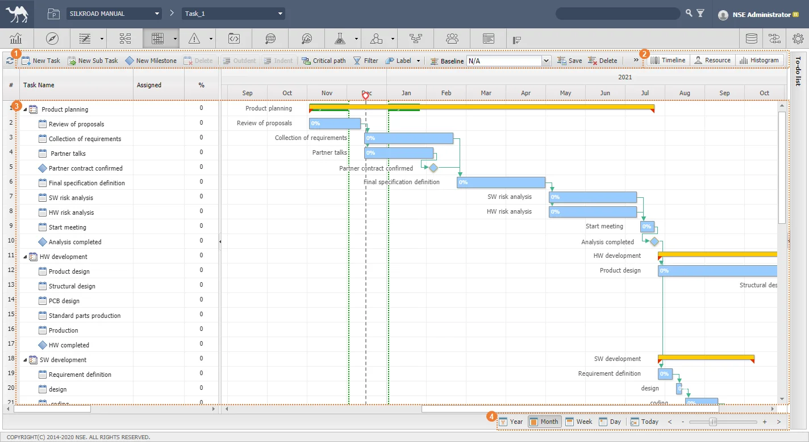 |
구분 | 명칭 | 설명 |
| 메뉴 바 | 협업관리시스템(Task) 기능 버튼 |
| 뷰 탭 | Timeline, Resource, Histogram 뷰 |
| 간트차트 뷰 영역 | 뷰 탭에서 선택한 뷰를 보여주는 영역 |
| 뷰 영역 범위 조정 | 연, 월, 주, 일 단위로 뷰 영역에서 보이는 범위 조정 |
① 방법 1. 메뉴바의 ‘New Task’ 버튼을 클릭한다.
|
② 방법 2. 좌측 간트차트에서 우클릭 - ‘Add’ - ‘Task’를 클릭한다.
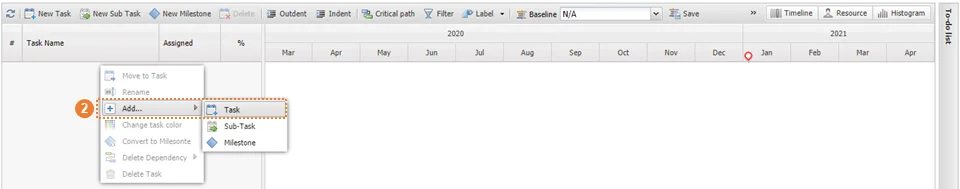 |
③ 업무 이름을 작성한 후 임의의 영역을 클릭하여 저장한다.
① 보조 업무를 생성할 업무를 클릭한다.
② 방법 1. 메뉴바의 ‘New Sub Task’ 버튼을 클릭한다.
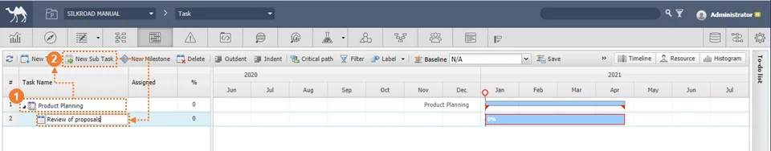 |
③ 방법 2. 좌측 간트차트에서 우클릭 - ‘Add’ - ‘Sub Task’를 클릭한다.
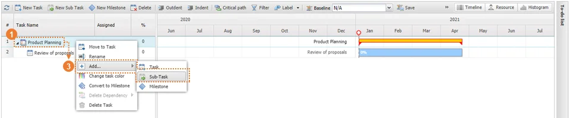 |
④ 보조 업무의 이름을 작성한 후 임의의 영역을 클릭하여 저장한다.
업무의 기한, 종료일과 일정의 변화 등 특정 이벤트를 표시할 마일스톤을 생성한다.
① 방법 1. 메뉴바의 ‘New Milestone’ 버튼을 클릭한다.
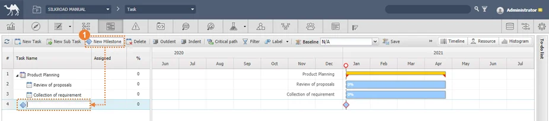 |
② 방법 2. 좌측 간트차트에서 우클릭 - ‘Add’ - ‘Milestone’을 클릭한다.
|
③ 마일스톤의 이름을 작성한 후 임의의 영역을 클릭하여 저장한다.
업무의 편집은 간트차트에 생성된 업무의 셀을 더블클릭하여 직접 수정하는 방법과 정보창을 생성하여 수정하는 방법이 있다.
① 방법 1. 이름을 변경할 업무에 우클릭 - ‘Rename’ 버튼을 클릭한다.
② 이름을 변경한 후 임의의 영역을 클릭하여 반영한다.
|
③ 방법 2. 생성된 업무를 더블클릭하여 정보창을 생성한다.
④ ‘Name’을 변경한다.
⑤ ‘OK’ 버튼을 클릭하여 저장한다.
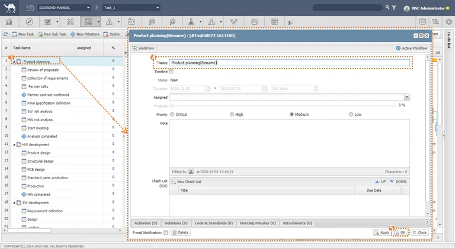 |
‘Task Name’ 셀은 직접 수정하는 방법을 제공하지 않는다. |
업무를 담당할 담당자를 지정합니다. 업무 담당자는 To-do List에서 담당 업무를 확인할 수 있다.
① 좌측 간트차트에서 수정할 업무의 ‘Assigned’ 셀을 더블클릭한다.
② 해당 업무를 담당할 담당자의 체크박스 체크한다.
③ ‘OK’ 버튼을 클릭하여 저장한다.
④ 담당자의 To-do list에 업무가 표시된다.
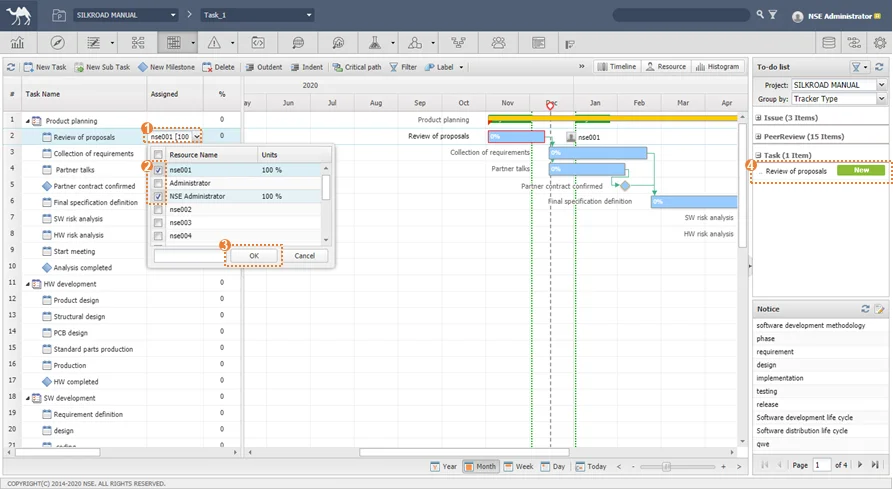 |
업무 Assigned는 워크플로우 모듈의 Assignment와 다른 특성으로 Assigned에 지정된 담당자여도 워크플로우를 진행할 수 없다. 업무 정보창에서 ‘Assigned’ 필드를 수정하여 담당자를 추가할 수 있다. |
① 좌측 간트차트에서 수정할 업무의 ‘%’ 셀을 더블클릭한다.
② 업무 진행률을 직접 입력하거나 상,하 아이콘을 클릭하여 업무 진행률을 입력한다.
③ 빈 영역을 클릭하여 저장한다.
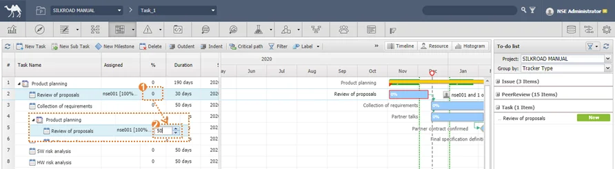 |
업무 정보창에서 ‘Progress(%)’ 필드를 수정하여 진행률을 설정할 수 있다. |
업무의 시작 날짜(Start Date)를 기준으로 설정된 Duration 만큼 업무를 계획하여 업무 종료 날짜(Finish Date)를 설정한다.
① 좌측 간트차트에서 수정할 업무의 ‘Duration’ 셀을 더블클릭한다.
② 기간을 직접 입력하거나 상,하 아이콘을 클릭하여 기간을 입력한다.
③ 빈 영역을 클릭하여 저장한다.
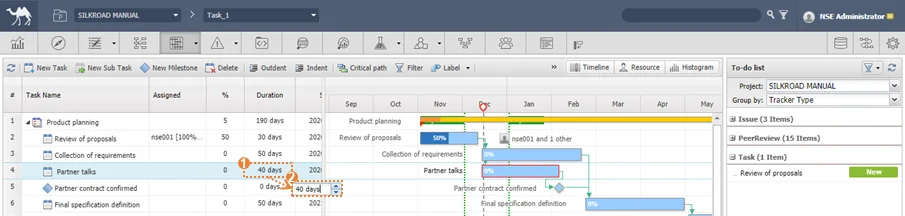 |
업무(Task)가 시작될 기간을 설정한다. 업무의 기간은 ‘YYYY-MM-DD’ 형식으로 설정할 수 있습니다. 업무 시작 날짜를 설정하는 경우 ‘Duration’ 에 따라 업무 종료일이 자동으로 변경됩니다.
① 좌측 Gantt Chart에 생성된 업무 중 업무 시작일을 변경하고자 하는 셀을 선택한다.
② ‘Start’ 셀을 더블클릭한다.
③ 직접 기재 또는 달력을 통하여 업무의 시작일을 설정한다.
|
④ 설정된‘Duration’ 에 따라 Finish Date는 자동으로 재설정된다.
⑤ 또는, 변경하고자 하는 Task의 Task Name 칼럼을 더블클릭하여 생성되는 정보창의 ‘Duration’을 통하여 업무의 시작일을 설정할 수 있다.
|
업무(Task)가 종료될 날짜를 설정한다. 종료 날짜를 설정하는 경우 ‘Duration’ 기간이 시작 날짜와 수정된 종료 날짜의 일수를 기준으로 계산하여 조정됩니다.
① 좌측 Gantt Chart에 생성된 업무 중 업무 종료일을 변경하고자 하는 셀을 선택한다.
② ‘Finish’ 셀을 더블클릭한다.
③ 직접 기재 또는 달력을 통하여 업무의 종료일을 설정한다.
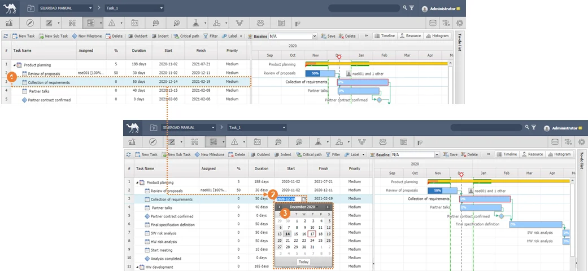 |
① 설정된‘Duration’ 에 따라 Start Date는 자동으로 재설정된다.
② 또는, 변경하고자 하는 Task의 Task Name 칼럼을 더블클릭하여 생성되는 정보창의 ‘Duration’을 통하여 업무의 종료일을 설정할 수 있다.
|
업무(Task)의 중요도를 설정한다.
① 좌측 Gantt Chart에 생성된 업무 중 Priority를 변경하고자 하는 셀을 선택한다.
② ‘Priority’ 셀을 더블클릭한다.
③ 컨텍스트 메뉴(Critical, High, Medium, Low)에서 Priority를 선택한다.
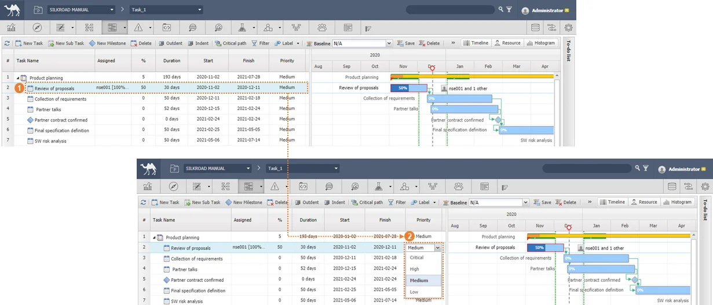 |
① 또는, 변경하고자 하는 Task의 Task Name 칼럼을 더블클릭하여 생성되는 정보창의 ‘Priority’를 통하여 업무의 중요도 설정할 수 있다.
|
업무(Task)의 중요도를 설정한다.
① 좌측 Gantt Chart에 생성된 업무 중 Color를 변경하고자 하는 셀을 선택한다.
② Color 셀을 선택하여 생성되는 색상 중 원하는 색상을 선택한다.
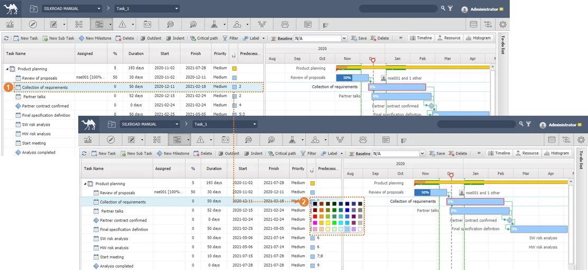 |
③ 또는, 마우스 우클릭을 통하여 생성되는 컨텍스트 메뉴 중 ‘Change Task Color’를 선택하여 색상을 변경한다.
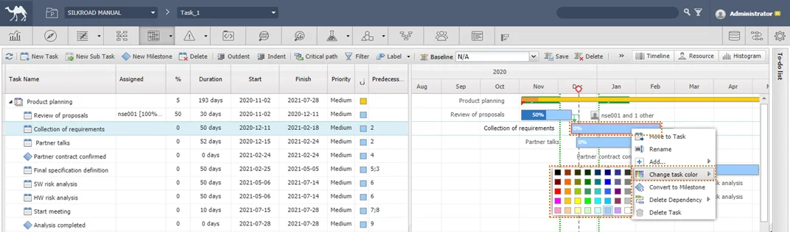 |
업무에 대한 알림 사항 및 주요 확인 사항을 등록하고 관리한다.
① 업무에 대한 알림 사항 및 주요 확인 사항을 등록하고자 하는 Task의 Task Name 칼럼을 더블클릭한다.
② 해당 Task의 정보창이 생성되면, Check List 항목의 ‘New Check List’ 버튼을 클릭한다.
③ 생성된 Check List의 Title, Due Date 칼럼을 더블 클릭하여 수정한다.
④ 체크 아이콘을 클릭하여 Check List를 관리한다.
⑤ 생성된 Check List는 우측 상단의 ‘UP, DOWN’ 버튼을 통하여 순서를 변경할 수 있다.
⑥ 삭제하고자 하는 Check List를 선택하고 우측의 휴지통 아이콘을 통하여 삭제할 수 있다.
⑦ ‘OK’ 버튼을 클릭하여 Check List를 저장한다.
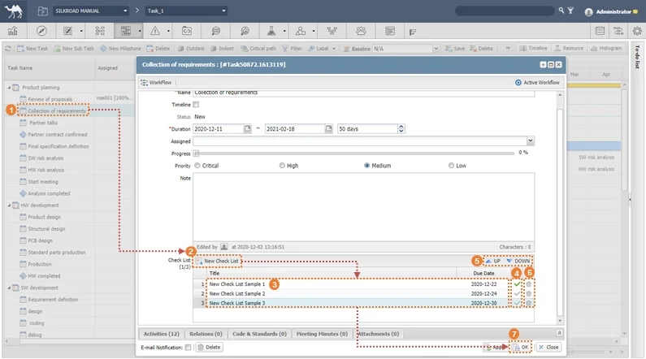 |
업무에 대한 수정사항 및 진행상황 존재 시 알림 이메일이 발송된다.
① 업무 더블클릭하여 정보창을 실행한다.
② ‘E-mail Notification’의 체크박스를 체크한다.
③ ‘OK’ 버튼을 클릭한다.
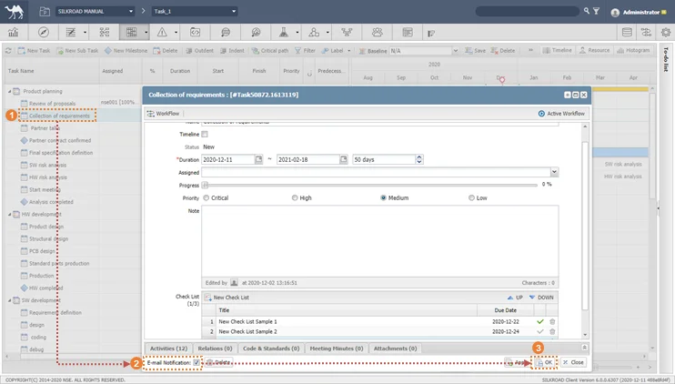 |
④ 회원가입 시 등록된 이메일로 이메일 알림이 발송됩니다.
‘E-mail Notification’ 체크박스 체크해제시 이메일 알림이 중단된다. |
생성된 업무를 마일스톤으로 또는 마일스톤을 업무로 변경할 수 있다.
① 마일스톤(또는 Task)으로 바꿀 업무에 마우스 오버를 한 뒤 마우스 우클릭한다.
② 컨텍스트 메뉴 중 ‘Convert to Milestone’을 클릭한다.
③ 업무가 마일스톤으로 변경됩니다.
업무가 마일스톤으로 변경되는 경우 ‘Duration’ 이 자동으로 ‘0’ 으로 변경됩니다. Finish Date 는 Start 날짜와 동일한 날짜로 수정됩니다. |
|
선택한 Task 바로 위의 Task와의 단계를 변화시킬 수 있다.
Outdent는 선택된 Task의 단계를 높이는 기능입니다. 최상위 Task로 변경할 수 있습니다. 최상위 단계일 때 Outdent 버튼을 클릭하면 경고 메시지가 생성됩니다.
Indent는 선택된 Task 단계를 낮추는 기능입니다. 상단 Task의 Sub Task로 소속된다. 최하위 단계일 때 Indent 버튼을 클릭하면 경고 메시지가 생성됩니다.
① 좌측 Gantt Chart에 하나 혹은 다수 Task를 선택한다.
② 상단의 메뉴바에서 Outdent / Indent 버튼을 클릭한다.
|
선택된 Task, Sub Task, Milestone을 삭제한다. 삭제는 관리자 권한을 가진 사용자만 삭제가 가능하다. 관리자 권한에 대한 설명은 아래 설명을 참고한다.
권한 : Project Manager(프로젝트 생성자) / 계정권한 Super, Admin / 메뉴권한 Admin
① 좌측 Gantt Chart에 삭제할 업무를 선택하고 마우스 우클릭한다.
② 컨텍스트 메뉴가 생성되면‘Delete’ 메뉴를 클릭한다.
③ ‘Message’창이 생성되면 ‘Yes’ 버튼을 클릭하여 삭제한다. Task 하위에 속한 Sub Task, Milestone이 존재할 시 모두 삭제를 알리는 메시지가 생성된다.
|
④ 또는, 삭제하고자 하는 Task의 Task Name 칼럼을 더블클릭하여 생성되는 정보창의 ‘Delete’를 통하여 삭제할 수 있다.
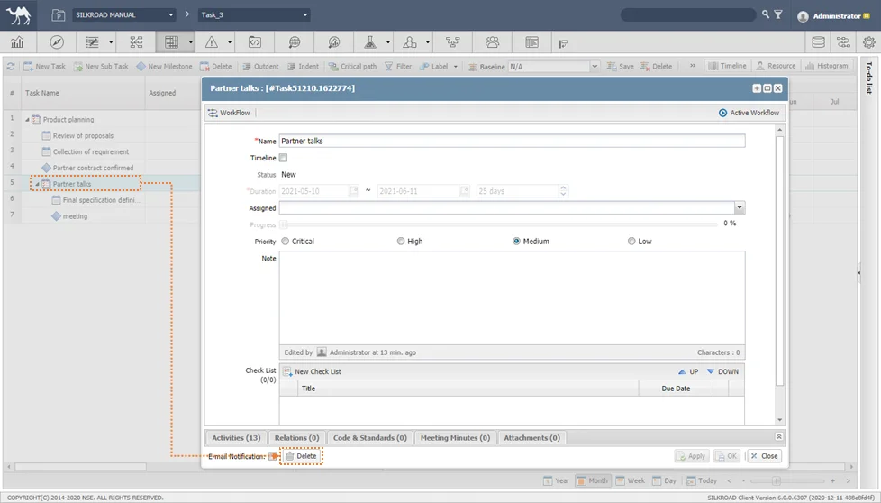 |
Task 하위에 Sub Task, Milestone이 존재하면 동시에 모두 삭제된다. |
업무(Task)간 의존도를 설정한다. 특정 업무가 종료되면 다음 업무를 진행할 수 있도록 업무의 의존관계를 설정한다. 의존관계를 설정하기 위해서는 2개의 업무가 필요하며 종류는 총 4가지가 있다. 의존관계 종류에 대한 설명은 아래 표를 참고한다.
구분 | 명칭 | 설명 |
| Predecessors | 네 개의 다른 Dependency(의존도) 지정 가능 |
| Predecessor 유형 | Finish to Start, Finish-To-Finish, Start-To-Finish 네 가지 유형 제공 |
| Start-To-Finish | 하나의 Task가 시작되면서 연결된 Task가 종료됨 |
| Finish-To-Finish | 하나의 Task가 종료되면서 연결된 Task도 종료시킴 |
| Start-To-Start | 하나의 Task가 시작되면서 연결된 Task도 시작시킴 |
| Finish-To-Start | 하나의 Task가 종료되면서 연결된 Task가 시작됨 |
① 우측 Gantt Chart에 의존관계를 설정할 업무의 종료일에 마우스를 올려놓는다.
② 동그라미 아이콘을 클릭한 상태로 의존도를 설정할 다른 그래프의 시작일 또는 종료일에 드래그&드롭 하여 연결한다.
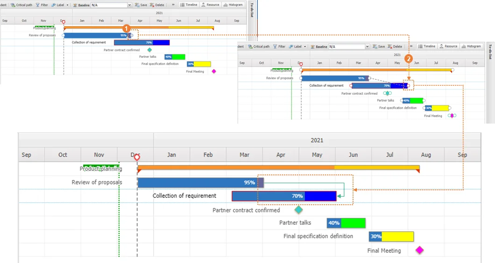 |
① 우측 Gantt Chart에 의존도를 편집할 업무의 의존도 연결선을 더블클릭한다.
|
② 의존도 설정창이 생성되면 항목에 따라 의존도를 편집한다.
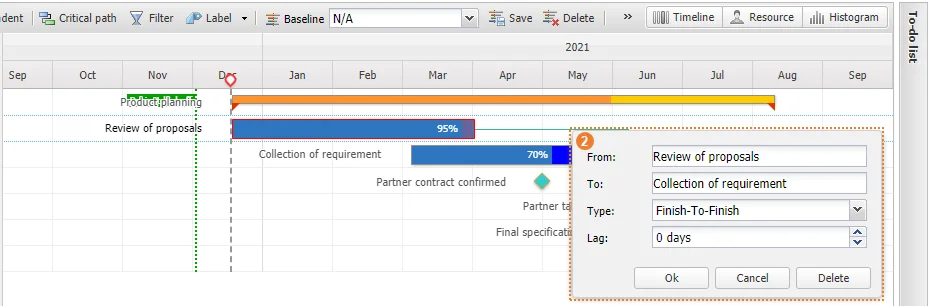 |
From : 의존도 설정 시작 지점을 설정 (Task Name을 기재) To : 의존도 설정 종료 지점을 설정 Type : 의존도 타입(Finish-To-Start / Start-To-Start / Finish-To-Finish / Start-To-Finish) 설정 Lag : 지연일수 설정 |
③ 의존도 편집이 완료되면 ‘OK’ 버튼을 클릭하여 저장한다.
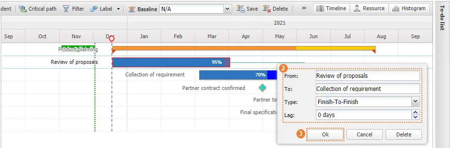 |
의존도는 특정 수식으로 표현되어 Gantt Chart가 복잡할 시 수식으로 연결 정도를 설정하여 파악한다.
① 좌측 Gantt Chart에 의존관계를 설정할 업무의 ‘Predecessors’ 셀을 더블클릭한다.
② 의존관계 수식어를 작성하고 임의의 영역을 클릭하여 적용한다.
③ 의존도에 따라 업무의 기간(Start, Finsish) 과 좌 우측 간트차트에 의존도 수식이 적용되어 업무가 조정된다.
예시)
- 특정 업무에 2개 이상의 의존도가 존재하는 경우 세미콜론(;)으로 구분한다.
- Finish-To-Start는 의존도 관계 수식을 표현하지 않고 Task 행 번호만 표시한다.
- SS(Start-To-Start), FF(Finish-To-Finish), SF(Start-To-Finish), FS(Finish-To-Start) 는 의존도 유형의 약자이다.
- Reg(수식표현) : 8SS+5 = 8(8번 선행 Task) SS(Start-To-Start) + 5(5일 후 해당업무 시작)
- 8번 선행 Task가 시작되고 5일 후 후행 Task가 시작됩니다. Lag(지연 일 수)를 지정하여 후행 Task 시작 혹은 종료 날짜의 격차를 줄 수 있다..
|
업무(Task)간 의존도를 삭제한다. 의존도 삭제는 의존도가 등록되어 있는 업무만 가능하다.
① 우측 Gantt Chart에 삭제할 의존도의 연결선을 더블클릭한다.
② 의존도 설정창이 생성되면 ‘Delete’ 버튼을 클릭하여 의존도를 삭제한다.
|
③ 또는, 의존도를 삭제하고자 하는 Task Name을 우클릭하여 생성되는 컨텍스트 메뉴에서 ‘Delete Dependency’ 메뉴를 선택하여 의존도를 삭제한다.
|
Critical Path는 오늘 날짜를 기준으로 아직 종료되지 않았고 Dependancy로 연결된 Task들이 종료되는데 까지 따라야하는 최단 순서를 알려주는 기능이다.
① ‘Critical Path’ 버튼을 클릭해 임계경로를 확인한다.
|
Critical Path는 오늘을 기준으로 Dependancy를 가지면서 아직 끝나지 않은 Task가 있으면 관련된 모든 Task 들의 임계경로를 표시한다. |
생성된 Task, Sub-Task, Milestone을 조건에 따라 검색하는 기능이다. 필터의 조건을 입력과 동시에 검색됩니다.
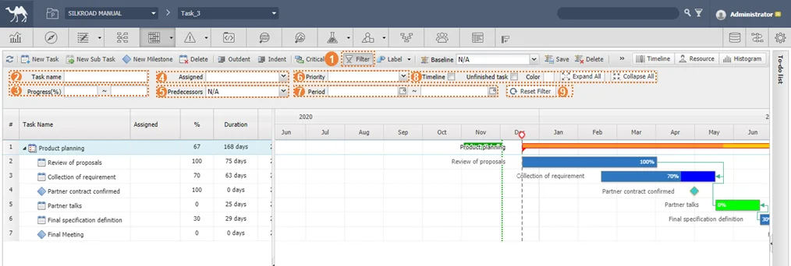 |
구분 | 명칭 | 설명 |
| Filter | 클릭하여 필터 창을 확장. 축소 시 입력한 내용은 그대로 남음 (필터 버튼 변화로 확인 가능) |
| Task Name | Task 이름으로 필터 |
| Progress | Task 진행률의 범위 필터 |
| Assigned | Task를 할당 받은 사람 기준 필터 |
| Predecessors | 네 종류의 Dependency(의존도 설정) 1) Start-To-Start : 연결된 Task들은 동시 시작 2) Start-To-Finish : 하나의 predecessor가 시작되면 연결된 다른 하나는 종료 3) Finish-To-Start : 하나의 predecessor 가 끝나면 연결된 다른 하나가 시작 4) Finish-To-Finish : 연결된 Task들은 동시에 종료 |
| Priority | Task 중요도 순으로 필터 |
| Period | Task 일정 지정 필터 |
기타 필터 | 1) Timeline : Timeline에 표시된 Task만 보여주기(체크) / 모두 보여주기(미체크) 2) Unfinished Task : 기한 일 초과, 미완료 Task 보여주기(체크) / 모두 보여주기(미체크) 3) Color : 타임라인 표시 색 기준 필터 4) Collapse : 최상위 단계의 Task, Milestone만 보여주기 필터 5) Expand All : 모든 단위의 Task 필터 | |
| Reset Filter | 지정한 필터 초기화 |
우측 Gantt Chart에 존재하는 업무의 이름과 담당자 정보를 보여주거나 숨길 수 있다.
① ‘Label’ 버튼을 클릭한다.
|
② ‘Title’을 클릭하면 우측 Gantt Chart내 있는 모든 업무의 이름을 보여주거나 숨긴다.
|
③ ‘Assigned’를 클릭하면 우측 Gantt Chart내 있는 모든 업무 담당자를 보여주거나 숨긴다.
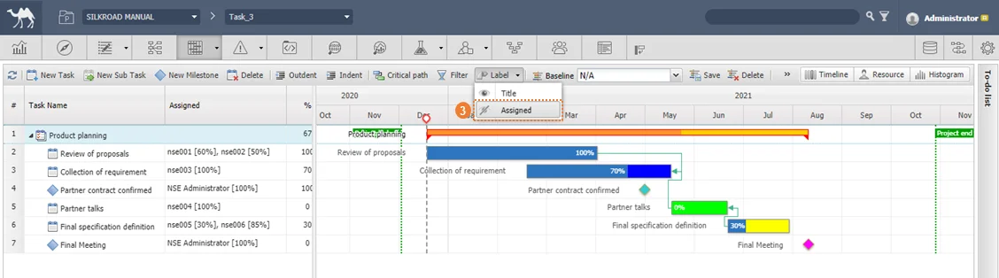 |
Baseline으로 저장된 Gantt 차트는 현재 생성된 업무 차트의 차이를 비교할 수 있도록 지원한다.
① 메뉴에서 ‘Save’버튼을 클릭한다.
② ‘New Task Baseline’ 창이 생성되면 Baseline의 Name을 기재하고 ‘OK’ 버튼을 클릭하여 현재 Task 상태를 Baseline으로 저장한다.
|
③ 메뉴의 Baseline 펼침목록에서 Baseline 선택한다.
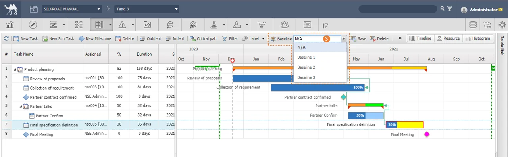 |
④ 저장 시점 기준으로 현재 Gantt Chart 변화를 확인할 수 있다.
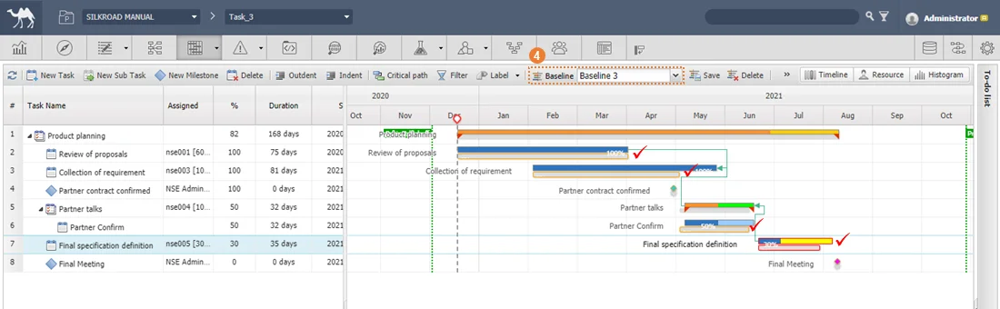 |
현재 Gantt차트와 비교가 가능한 특정 시점의 Baseline을 삭제하는 기능이다.
① Baseline을 선택한다.
② ‘Delete’ 버튼을 클릭한다.
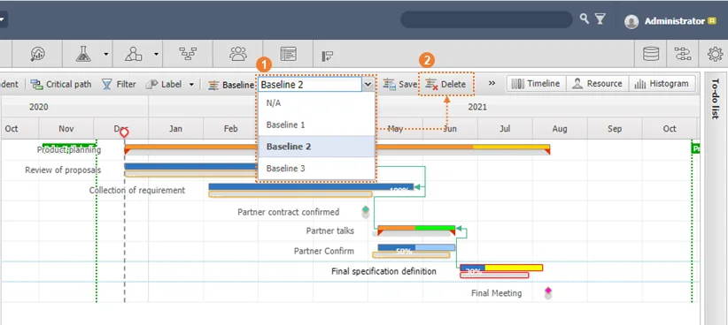 |
③ ‘Message’창이 생성되면 ‘Yes’를 클릭해 베이스라인을 삭제한다.
|
현 프로젝트의 Task 진행 상태를 워드 파일로 저장하기 위한 기능이다.
① ‘P.S Report’ 버튼을 클릭한다. (만약, P.S Report 버튼이 보이지 않을 경우 메뉴바에서 ‘ ’ 아이콘을 클릭하여 펼침목록에서 선택할 수 있다.)
’ 아이콘을 클릭하여 펼침목록에서 선택할 수 있다.)
|
② ‘Progress Status Report Configuration’창이 생성된다.
③ Report 내용에 포함시킬 Task, Note, CheckList를 선택한다.
|
④ ‘Save’ 버튼을 클릭하여 P.S Report를 사용자 로컬 저장소로 저장한다.
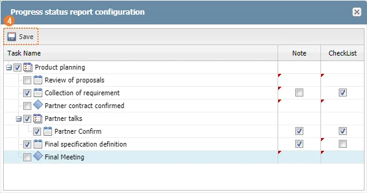 |
다른 Task 모듈에 저장된 업무나 MS-Project와 연동하여 Task 관리 파일을 불러올 수 있다.
① ‘Import’ 버튼을 클릭한다. (만약, Import 버튼이 보이지 않을 경우 메뉴바에서 ‘’ 아이콘을 클릭하여 펼침목록에서 선택할 수 있다.)
|
② ‘Import MS Project’ 창이 생성된다.
③ ‘Load’ 버튼을 클릭하여 불러오고 하는 Task 관리 파일을 선택한다. (‘.mpp’, ‘.mpx’, ‘.xml’ 형식 파일만 불러올 수 있다.)
|
해당 창에서 편집은 불가능하며 불러온 데이터만 확인할 수 있다. |
④ ‘Save’ 버튼을 클릭하여 Task 관리 파일을 불러온다.
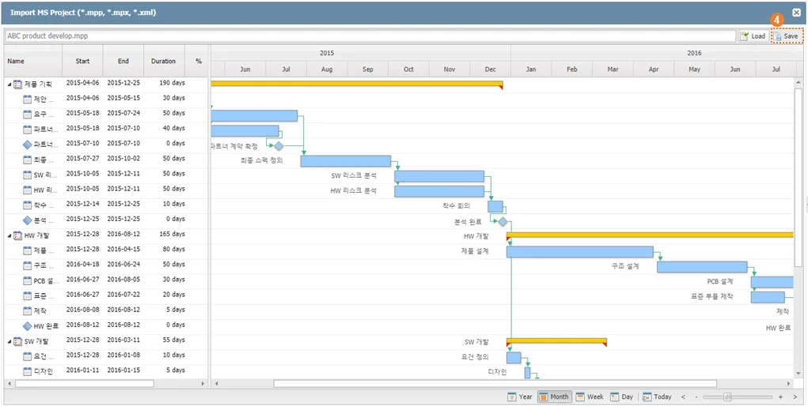 |
Task 목록을 WBS 기반 MS-Excel 형식으로 내보낼 수 있습니다.
① ‘Export’ 버튼을 클릭한다. (만약, Export 버튼이 보이지 않을 경우 메뉴바에서 ‘’ 아이콘을 클릭하여 펼침목록에서 선택할 수 있다.)
② ‘Excel’ 또는 ‘MS Project’ 버튼을 클릭하여 Task 목록을 사용자 로컬 저장소로 저장한다.
|
Workflow는 Task를 특정 인원에게 임명하여 순차적으로 수행해 나갈 수 있도록 해주는 기능을 제공한다.
① Task를 더블클릭하여 정보창을 실행한다.
② 정보창 우측 상단의 ‘Active Workflow’ 버튼을 클릭한다.
③ ‘Activate Workflow’ 창이 생성되면 ‘Yes’ 버튼을 클릭하여 Workflow를 진행한다.
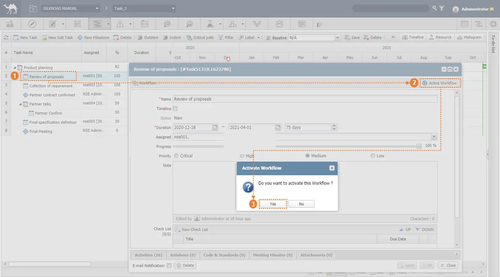 |
④ 해당 Task를 더블클릭하여 정보창을 생성한다.
⑤ 정보창 좌측 상단의 ‘Workflow’ 버튼을 클릭한다.
⑥ ‘Workflow – Task’ 창이 생성된다.
⑦ ‘Next’ Flow 와 ‘Assignee’를 선택한다.
⑧ ‘Assignment’ 버튼을 클릭하여 워크플로우를 진행한다.
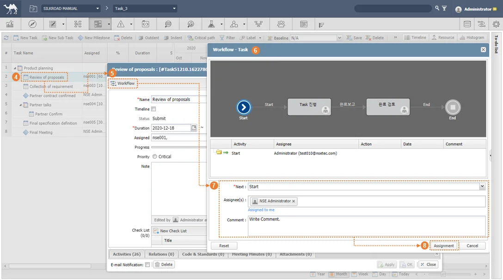 |
업무 워크플로우는 SILKROAD에서 제공하는 워크플로우 또는 사용자가 설정한 워크플로우에 따라 진행된다. 업무에 대한 워크플로우 설정은 ‘Settings’ 모듈 ‘Workflow Settings’에서 설정할 수 있다. 업무에 대한 워크플로우 초기화는 계정 권한 ‘Super’, ‘Admin’만 할 수 있다. 업무 담당자로 설정되는 경우 To-do List에서 할당된 업무를 관리할 수 있다. |
업무의 진행상황을 확인할 수 있다.
① Task를 더블클릭하여 정보창을 실행한다.
② ‘Status’ 필드에서 현재 업무의 진행상황을 확인한다.
|
③ 또는, 정보창 좌측 상단의 ‘Workflow’ 버튼을 클릭하여 생성되는 ‘Workflow – Task’ 창을 통하여 업무의 진행상황을 확인할 수 있다.
|
사용자에게 지정된 Task가 있는 경우 To-do List에서 업무 진행 상황을 확인할 수 있다. |
프로젝트 참여인원의 업무 시간을 배정하고 관리하는 기능이다. 월, 일, 시간 단위 등 구체적인 일정을 모두 관리할 수 있다. Calendar를 이용하여 하루 업무 시간을 설정할 수 있으며, History View에서 프로젝트 참가 인원의 업무 집중도를 파악할 수 있도록 연동되어 있다.
① ‘Calendar’ 버튼을 클릭한다. (만약, Calendar 버튼이 보이지 않을 경우 메뉴바에서 ‘’ 아이콘을 클릭하여 펼침목록에서 선택할 수 있다.)
② ‘Calendar Manager’ 창이 생성된다.
|
① Calendar 우클릭 - Edit working hours’탭을 선택하여 Calendar 근무 시간 창을 생성한다.
② Start, End 셀을 더블클릭한 후 업무 시간을 설정합니다.
③ ‘Save’ 버튼을 클릭하여 저장하고 종료한다.
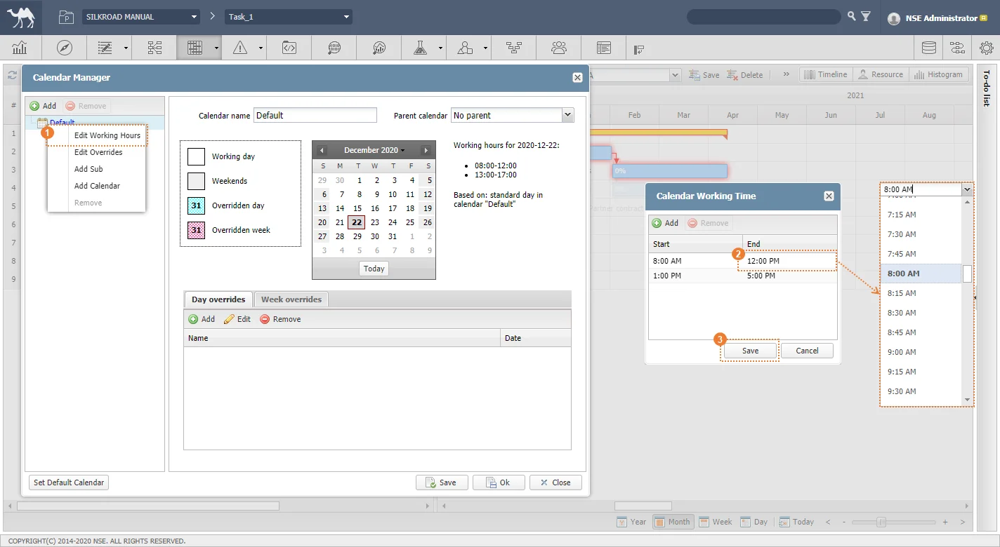 |
현재 선택된 Calendar의 업무 수행시간을 일괄 변경합니다. 변경된 업무 수행시간은(working hours)는 히스토그램에 반영되어 업무의 분배율을 표시하게 된다. |
기본으로 설정된 일과사항 이외에 특정일이나 일(Day), 주(Week)의 업무 시간에 대한 편집이 가능하다.
① ‘Add’ 버튼을 클릭하여 선택된 일자를 예외로 지정한다.
② 생성된 Day Override의 ‘Add’를 더블클릭하여 이름을 수정한다.
③ 생성된 Day Override의 ‘Date’를 더블클릭하여 이름을 수정한다.
|
④ ‘Edit’ 버튼을 클릭하여 업무시간을 별도로 지정하거나 휴일로 지정할 수 있다.
⑤ ‘Remove’ 버튼을 클릭하여 불필요한 예외(Override)설정을 삭제한다.
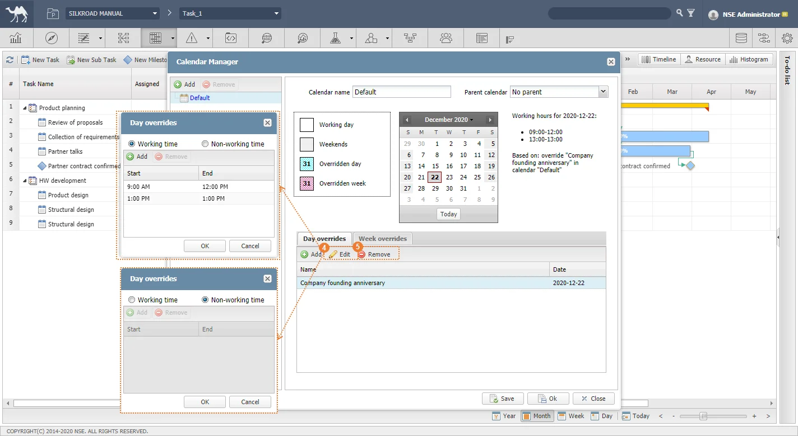 |
참고 : 주(Week) 단위 예외 설정도 일(Day) 예외설정과 동일하게 설정 가능하다. |
타임라인 뷰는 구체적인 Task의 기간과 일정이 표시된다. 목록에서 Timeline 옵션 박스를 체크할 시 타임라인에 등록된다.
기본으로 설정된 일과사항 이외에 특정일이나 일(Day), 주(Week)의 업무 시간에 대한 편집이 가능합니다.
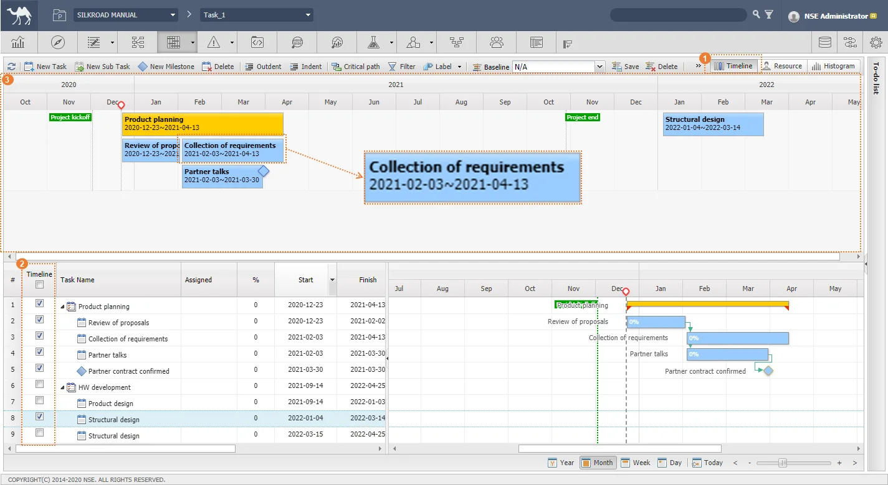 |
구분 | 명칭 | 설명 |
| Timeline 탭 | Timeline 뷰어로 이동 |
| Check-box | Timeline에 보이도록 하고 싶은 Task 선택. 체크 시 Timeline 뷰 반영 |
| Timeline 화면 구성 | Task 이름, 시작일ㆍ마감일 표시 |
타임라인에 표시할 업무를 설정한다.
① 좌측 하단 간트차트에서 Timeline 체크박스를 체크하여 타임라인 표시 업무를 설정한다.
② 업무 더블클릭 - 정보창에서 Timeline 체크박스를 체크하여 타입라인 표시 업무를 설정한다.
|
리소스 뷰는 참여자 별로 할당된 업무 정보를 표시합니다.
|
구분 | 명칭 | 설명 |
| Resource 탭 | Resource 뷰로 이동 |
| Assigned(할당 인력) | Task 참여 인력 목록(인원 추가ㆍ삭제) |
| Resource 뷰 | 현 프로젝트 참여 인력이 수행중인 Task를 모두 보여줌 |
| Move to Histogram | 우클릭하여 생성. Histogram View로 이동가능 |
|
구분 | 명칭 | 설명 |
| Histogram 탭 | Histogram 뷰로 이동 |
| Assigned(할당 인력) | Task 참여 인력 목록(인원 추가ㆍ삭제) |
| Histogram 뷰 | 현 프로젝트 참여 인력이 수행중인 Task를 모두 보여줌 |
| Move to Resource | 우클릭하여 생성. Resource View로 이동가능 |
우측 Gantt Chart에서 특정 업무 위치로 이동하여 업무의 상황을 확인합니다.
① 우측 Gantt Chart에서 특정 업무 위치로 이동할 업무에 마우스 오버 후 우클릭한다.
② 컨텍스트 메뉴가 생성되면 ‘Move to Task’ 버튼을 클릭한다.
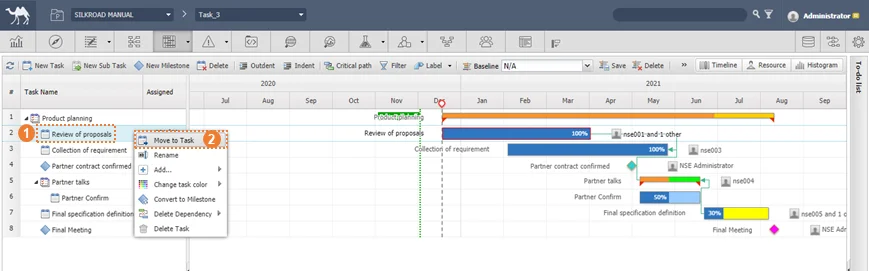 |
③ 우측 Gantt Chart에서 특정 업무 위치로 이동된다.
다수 업무를 선택한 경우에는 색상 변경과 업무 삭제만 가능하다.
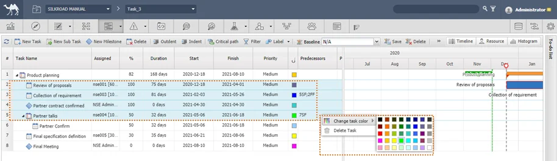 |
차트 뷰 단계는 차트 뷰 화면 하단의 Year, Month, Week, Day 버튼을 통하여 조절이 가능하다. 차트 뷰 단계는 이전 로그인 시 사용하던 상태 그대로 다음 로그인 때에도 유지됩니다.
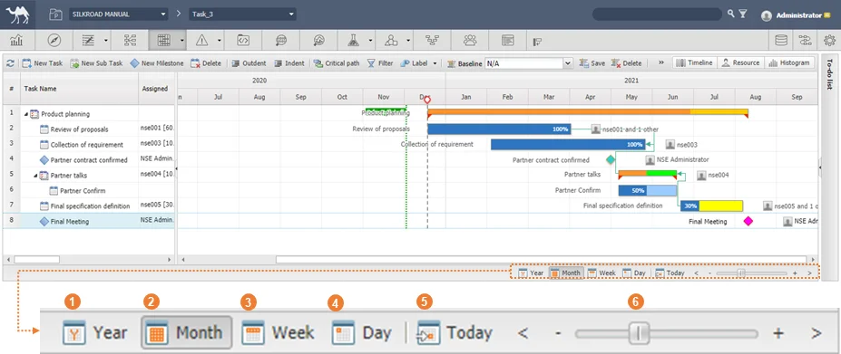 |
구분 | 명칭 | 설명 |
| Year | 연, 분기(1/4 단위) 표시 |
| Month | 한 해와 그에 속한 월 단위 표시 |
| Week | 연 월, 그리고 주 단위 표시 |
| Day | 연, 월, 그리고 일단위 표시 |
| Today | 오늘 날짜로 Gantt Chart 이동 |
‘<’, ‘>’ | 클릭 하여 Gantt 좌, 우 이동 |
번호 | 메시지 | 설명 | 해결방안 |
|---|---|---|---|
1 | E-mail notification for this item have been turned on. | - | |
2 | Top item, you can not change the outdenetation, | 최상위 Task를 Outdent 메뉴를 통하여 단계를 높이려고 시도하는 경우 | |
3 | End item, you can not change the indenetation, | 최하위 Task를 indent 메뉴를 통하여 단계를 낮추려고 시도하는 경우 | |
4 | Deleting summary task will delete the subtask as well. Do you wish to continue? | Sub Task가 있는 상위 Task 삭제를 시도할 경우 | |
5 | |||
6 | |||
7 | |||
8 | |||
9 |